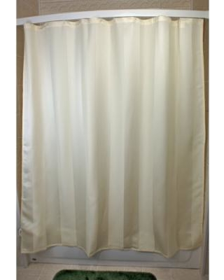
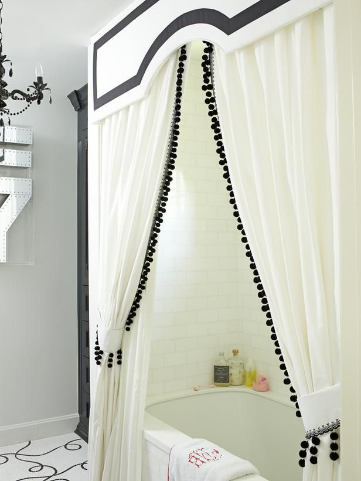
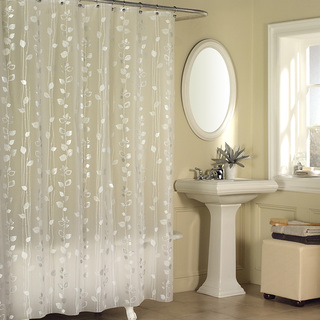

So let's begin with something I'm going to hate a lot because this stupid thing will always block the wonderful view of you taking a bath
|  |  |  |
I think the 3rd one is best, because it is kind of transparent so it can give treat to my eyes whenever you take a bath :P #RohanTharki xD
Anyways, coming back to the point, Happy Birthday, you nalayak "dripping-nose" kabutar yet sweet, little, lovely, amazing, beautiful, entertaining, smart-ass, sexy, loving, caring, crazy animal!
I never thought that being in a relationship can be this good! The only part I hate about this is the distance because everytime I'm in mood of a good nap, you always sneak under my blanket and sleep beside me and rest your head on my chest and we talk for hours! And I really love the romantic side of yours :P I really cannot imagine how passionate our first kiss is going to be! And haan first kiss normal hogi, I mean no ice cream and all, I just want to taste your natural lips xD I want to propose to you every single morning, and I want to tell you how special you are to me at the same time! And it's not just a running code which makes me happy, it's you who always make me happy. Having an understanding and crazy girlfriend is something I'm really lucky and proud to have. It's you who have made me realize how boring time-pass relationships can be, and how exciting it is to have a partner whom you like more than anything else. Just try not to be a kanjoos when it comes to hugging, okay? xD Prove me wrong one day ;)
Seems like the last paragraph I wrote is not true anymore
Date : 28 April,2017
YOU ARE THE BEST! Those two nights will always be there in my mind till eternity. And I'm sure there are more such special moments to come :) The best part about those nights was that it took our relationship to a whole new level, the level which I'm really enjoying, a level involving positive feelings and passionate kisses xD
I'm seriously running out of ideas how to make you feel special, it feels like whatver I try to do, it is of much less worth than you deserve. But ironically, I never want to feel saturated or bored of doing all this, because I really want to be the reason behind your smile, even if I'm just one of the other million reasons. Let's work really hard to achieve our dreams, and then I'll make sure that you will get bored of feeling special everyday, because I'm going to
do a lot of things for you once we are rich and successful! Once we are at that stage, I promise you, everyday will be your birthday, and I will cook karela for you everyday till you start hating it like I do :P Thanks for making me feel how love feels like, it surely is wonderful! And yes, tu paagal hai :P
Well, you know what this is :P The name of this shore is Reynisfjara, and it is near village Vik in Iceland. So I guess we know what's our destination is, just the journey is left now :)
I know I was supposed to give you these handwritten, but.... :P
The Story
Let me tell you a story.
There was a girl, charming sweet smart and crazy.
A guy used to like her a lot, but he didnt confess because he was afraid of getting beaten by a pot.
The guy had never liked any girl since his birth time, because he knew he deserves a partner who is sublime.
One fine night, the girl was in great mood, and the boy grabbed the opportunity and asked her, "If I'm Joey, can you be my food?"
The girl being sensible and smart, didnt break the pot on the guy's head, towards a great destiny of both, she led.
5 and a half months on the adventurous journey they went, they were so strong that the distance couldn't even make a single dent.
I will make coffee for you every morning in your favorite mug, can I now get a tight hug?
You are my something something :P
You are my craving, you are my distraction
A craving which is bigger than anything else, and a distraction which is sweeter than anything else
You are my property, you are my dream
A property which is priceless, and dream which makes my nights sleepless
You are my skin, you are my soul
A skin which is desparate for love bites, and a soul which is honest when this writer writes
You are my Taabar, you are my girl
Taabar who is the cutest in the entire world, and girl who is the best in the entire world
This is something...
The way you dressed up that day, the way you walked towards me that day
This is something which I will never forget, this is something which I will never forget.
The way you hid your face when I tried to click your picture, the way you proved that you are both funny and romantic, that's a perfect mixture. This is something...
The way I lifted you and you kissed my forehead, the way I felt at that time to kiss you deep and throw you on bed. This is something...
The way you spread your arms to hug me while you were sitting in that wardrobe, the way I loved that tiny earring on your earlobe. This is something...
The way you looked at me when you were on my top, the way I was hoping for time to stop. This is something...
The way I want all of this to happen again and again, the way you give me what I want without even a single bargain. This is something...
The way I sometimes act like a creep, the way you handle my silliness without making even a single beep. This is something...
The way you are listening to this poem without judging the words, the way you make my heart soar high like birds. This is something...